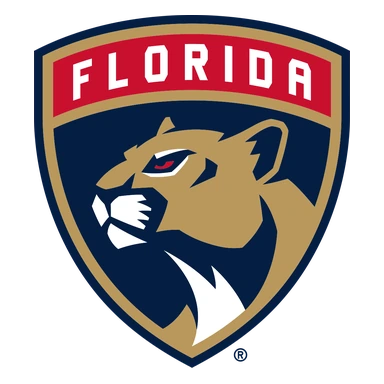
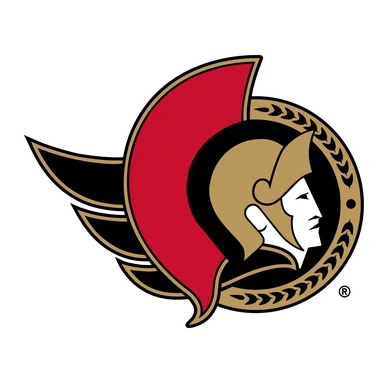

Вашингтон — Баффало итог матча 20 ноября
Расчёт модели до матча
- 3,4 : 3,0ожидаемые голы
- 46 %тотал больше 6,5
Цифры считает модель по данным сайта, а не эксперт. Это вероятности, а не гарантия исхода. Как считает модель · словарь терминов.
Статистика матча
- 37Броски в створ18
- 1 из 2Голы в большинстве2 из 3
- 13Штрафные минуты11
- 49 %Выигранные вбрасывания51 %
- 33Силовые приёмы22
- 11Блокированные броски18
- 3Отборы4
- 10Потери12
Удаления по минутам 9
- 1-й период
- Sam CarrickДрака5 мин
- Tom WilsonДрака5 мин
- Tage ThompsonБлокировка2 мин
- Jack St. IvanyГрубость2 мин
- Tage ThompsonГрубость2 мин
- Pierre-Luc DuboisГрубость2 мин
- 2-й период
- Pierre-Luc DuboisБлокировка2 мин
- 3-й период
- Aliaksei ProtasВыброс шайбы2 мин
- Peyton KrebsЗадержка клюшкой2 мин
Данные лиги.
- ТурнирНХЛ
Коротко о матче
Вашингтон — Баффало 3:6: гости победили. Модель до игры считала самым вероятным исходом победу хозяев (44 %) — на этот раз вышло иначе.
К игре обе команды подходили с сериями: Вашингтон — 3 поражения подряд, Баффало — 5 поражений подряд. По форме разница была заметной: в пяти последних матчах Вашингтон — 2 победы, Баффало — ни одной победы. Слабое место — оборона: Вашингтон — в среднем 4,4 пропущенной шайбы за игру в этих пяти матчах.
До этого команды встречались 5 апреля 2026 года: Вашингтон — Баффало 6:2.
Отдых и дорога
У обеих команд по 1 дню отдыха.
 Вашингтонхозяева
Вашингтонхозяева
- 1день отдыха
- 3матча за 7 днейвключая этот
- 1-йдомашний матч подряд
- 1 300км перелётбез смены часового пояса
Прошлый матч: 18.11, Тампа-Бэй — Вашингтон 5:2
 Баффалогости
Баффалогости
- 1день отдыха
- 4матча за 7 днейвключая этот
- 4-йвыездной матч подряд
- 200км перелётбез смены часового пояса
Прошлый матч: 18.11, Филадельфия — Баффало 4:3
Перелёт — по прямой между городами прошлого и этого матча. Время отдыха считаем от начала прошлого матча.
Форма: последние матчи
Вашингтон 2 победы из 5

В4:3
В3:2 П2:5
П2:5- П4:7
 П2:5
П2:5
Баффало 0 побед из 5
 П1:4
П1:4- П3:8
 П2:3
П2:3 П0:2
П0:2 П3:4
П3:4
Кто в форме
Больше всего очков (голы + передачи) в последних матчах команды.
Вашингтонза 5 последних матчей
| Игрок | Г | П | О |
|---|---|---|---|
| Aliaksei Protas | 1 | 5 | 6 |
| Cole Hutson | 1 | 5 | 6 |
| Pierre-Luc Dubois | 4 | 1 | 5 |
| Ryan Leonard | 3 | 2 | 5 |
| Alex Tuch | 2 | 0 | 2 |
Баффалоза 5 последних матчей
| Игрок | Г | П | О |
|---|---|---|---|
| Tage Thompson | 3 | 1 | 4 |
| Mattias Samuelsson | 1 | 2 | 3 |
| Jack Quinn | 0 | 3 | 3 |
| Josh Doan | 1 | 1 | 2 |
| Josh Norris | 0 | 2 | 2 |
Дома и в гостях
Хозяева — в своих домашних матчах, гости — в выездных. Регулярный чемпионат этого сезона.
| Матчей | 12 | 11 |
|---|---|---|
| Побед | 7 из 12 | 4 из 11 |
| Забивают за игру | 3,8 | 3,1 |
| Пропускают за игру | 3,8 | 3,5 |
| Тотал больше 5,5 | 92% | 64% |
| Доходили до овертайма | 8% | 45% |
Жирным — лучшее из двух. Овертайм — с буллитами.
Вратари
Цифры за сезон. Кто выйдет в старте, клубы обычно объявляют только перед игрой.
Вашингтон
| Вратарь | И | Отражено | Пропуск. | На ноль |
|---|---|---|---|---|
| Logan Thompson №48 | 15 | 87,8% | 3,42 | 0 |
| Charlie Lindgren №79 | 7 | 86,4% | 3,47 | 0 |
Баффало
| Вратарь | И | Отражено | Пропуск. | На ноль |
|---|---|---|---|---|
| Ukko-Pekka Luukkonen №1 | 13 | 87,3% | 3,47 | 0 |
| Colten Ellis №92 | 8 | 87,3% | 3,39 | 1 |
| Alex Lyon №34 | 3 | 89,8% | 3,02 | 0 |
Отражено — доля отражённых бросков. Пропуск. — пропущено шайб в среднем за игру.
Личные встречи
- Вашингтон6:2Баффало
- Баффало1:2Вашингтон
- Баффало4:3БВашингтон
- Вашингтон5:8Баффало
- Баффало4:3БВашингтон
- Вашингтон4:2Баффало
Положение в таблице
| Команда | Место | И | В | П | Голы | Очки |
|---|---|---|---|---|---|---|
| 12 | 20 | 10 | 10 | 67:76 | 20 | |
| 10 | 22 | 9 | 13 | 64:77 | 22 |
Куда дальше
Материалы носят информационный характер и не гарантируют результат. Реклама букмекеров на сайте не размещается. Сайт только для совершеннолетних (18+).